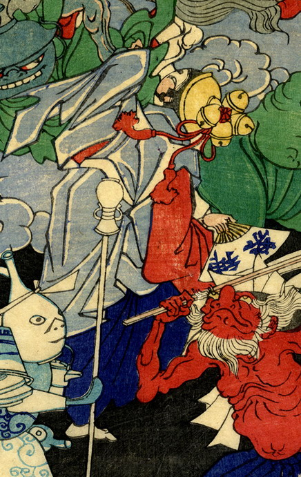

4つの大きな鈴を頭につけた女。巫女の装束を着て踊っている。手には「神楽」と書かれた扇子を持っている。
著作者：一魁斎芳年／出典：親書誌：U426_nichibunken_0224：百器夜行；ヒャッキヤギョウ／日付：2010／資源識別子：U426_nichibunken_0224_0003_0000
Copyright (c)2010- International Research Center for Japanese Studies, Kyoto, Japan. All rights reserved.